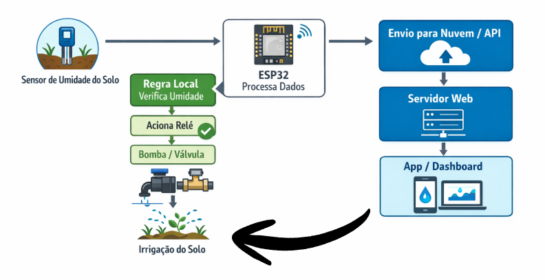

O Desafio
Muitos produtores enfrentam desperdício de água e dependência de mão de obra manual, o que gera estresse hídrico nas plantas e reduz a produtividade.
Nossa Resposta
O Smart Irrigation Hydroflow monitora a umidade do solo em tempo real, garantindo a quantidade exata de água no momento certo.
Escopo do Projeto
Nosso sistema é baseado em Internet das Coisas (IoT), utilizando microcontroladores ESP32 e sensores capacitivos que não corroem, garantindo durabilidade no campo.
O acionamento é feito de forma híbrida: a automação local garante que a planta seja regada mesmo se o Wi-Fi cair, enquanto a nuvem permite que você controle tudo pelo celular ou computador.
- °Válvulas Solenoides de alta precisão.
- °Telemetria de consumo de água.
- °Hardware Acessível para microempreendedores.

Monitoramento IoT
Sensores capacitivos de alta precisão conectados ao ESP32, enviando dados constantes sobre a saúde do seu solo.
Gestão Remota
Dashboard Web e App Mobile para visualizar o status da irrigação e configurar parâmetros de qualquer lugar.
Controle Híbrido
Automação inteligente que funciona localmente mesmo sem internet, mas com controle total via nuvem.
Eficiência de Custos
Redução drástica no desperdício de água e energia, otimizando a mão de obra da sua microempresa.
Alertas e Resiliência
Notificações push em tempo real sobre falhas de conexão, falta de água ou leituras anômalas.
Sustentabilidade
Algoritmos de precisão que interrompem a rega na saturação ideal, preservando os nutrientes do solo.
Como o Hydroflow funciona?
Conexão do Hardware
Instale o ESP32 e os sensores capacitivos no solo. Eles são resistentes à corrosão e prontos para o campo.
Sincronização Nuvem
O sistema se conecta ao Wi-Fi e começa a enviar dados de umidade e temperatura em tempo real.
Automação Inteligente
O Hydroflow decide o momento exato de abrir as válvulas, ou você assume o controle pelo App.